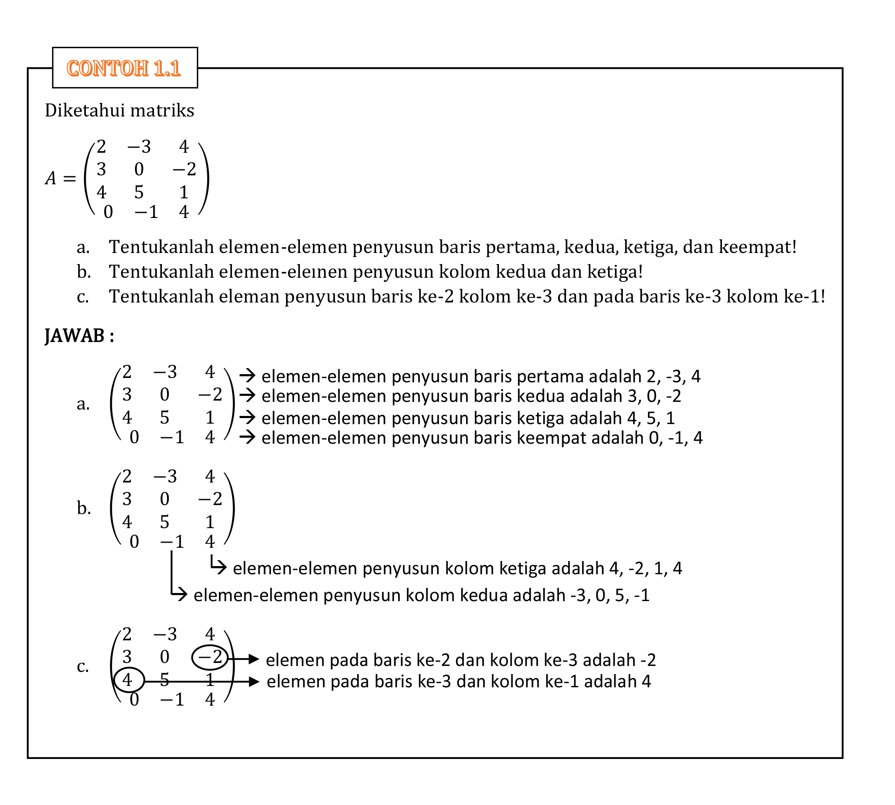

Pengertian, Notasi, dan Ordo suatu Matriks
Empat kota, yaitu A, B, C, dan D terhubungkan seperti terlihat pada Gambar Kota A dan B dihubungkan oleh satu jalan, dan jalan menghubungkan kota A dan C, tiga jalan menghubungkan kota C dan D, serta satu jalan menghubungkan kota B
dan D. Deskripsi tersebut dapat disajikan dalam Tabel berikut.
|
A |
B |
C |
D |
| A |
0 |
1 |
2 |
0 |
| B |
1 |
0 |
0 |
1 |
| C |
2 |
0 |
0 |
3 |
| D |
0 |
1 |
3 |
0 |
Tabel diatas dapat dtubah menjadi bentuk lain yang lebih sederhana dengan cara menghilangkan baris pertama dan kolom pertama dari tabel tersebut sedemikian sehingga yang tertinggal hanya angka-angkanya saja. Apabila bentuk terakhir
ini diletakkan pada tanda kurung, maka diperoleh bentuk sebagai berikut.
$$\begin{pmatrix}0&1&2&0 \\ 1&0&0&1 \\ 2&0&0&3 \\ 0&1&3&0 \end{pmatrix}$$
Bentuk terakhir ini biasa disebut dengan matriks. Permasalahan program linear dapat pula diselesaikan dengan metode matriks.
Dari penjelasan di atas diperoleh definisi matriks sebagai berikut.
Matriks adalah susunan dari bilangan-bilangan (hasil pengukuran) yang berbentuk persegi panjang dan disusun menurut baris dan kolom. Bilangan-bilangan yang menyusun baris ataupun kolom dari suatu matriks disebut
elemen-elemen dari matriks.
Matriks \(\begin{pmatrix}0&1&2&0 \\ 1&0&0&1 \\ 2&0&0&3 \\ 0&1&3&0 \end{pmatrix}\) merupakan matriks berukuran \(4 \times 4\) karena terdiri dari 4 baris dan 4 kolom, sehingga dapat dikatakan matriks tersebut berordo \(4 \times 4\). Matriks
\(\begin{pmatrix}2&0 \\ 1&3 \\ -1&-2 \end{pmatrix}\) dikatakan berordo \(3 \times 2\) karena terdiri dari 3 baris dan 2 kolom.
Suatu matriks yang mempunyai m baris dan n kolom disebut matriks berordo m x n.
Penamaan suatu matriks biasa menggunakan huruf besar (kapital), sebagai contoh \(A=\begin{pmatrix}0&1&2&0 \\ 1&0&0&1 \\ 2&0&0&3 \\ 0&1&3&0 \end{pmatrix}\). Untuk lebih memahami pengertian matriks, perhatikan ilustrasi matriks berikut ini.
$$A=(a_{ij})=\left( \begin{matrix}
a_{11} & a_{12} & a_{13} & \dots & a_{1n} \\
a_{21} & a_{22} & a_{23} & \dots & a_{2n} \\
\vdots & \vdots & \vdots&\ddots & \vdots \\
a_{m1} & a_{m2} & a_{m3}& \dots & a_{mn} \\
\end{matrix} \right)$$
Keterangan :
- \(a_{12}\) adalah elemen baris ke-1 dan kolom ke-2
- elemen-elemen: \(a_{11}, a_{12}, a_{13}, \dots a_{1n}\)disebut elemen-elemen penyusun baris 1
- elemen-elemen: \(a_{13}, a_{23}, a_{33}, \dots a_{m3}\) disebut elemen-elemen penyusun kolom 3
- dan \(a_{ij}\) adalah elemen baris ke-
i dan kolom ke-
j dengan
i = 1, 2, 3, 4, . . . m j = 1, 2, 3, 4, . . . n Suatu matriks
A yang mempunyai
m baris dan
n kolom disebut matriks berordo
m x n, dan diberi notasi ”\(A_{mn}\)” atau ”\(A_{(m \times n)}\)”
